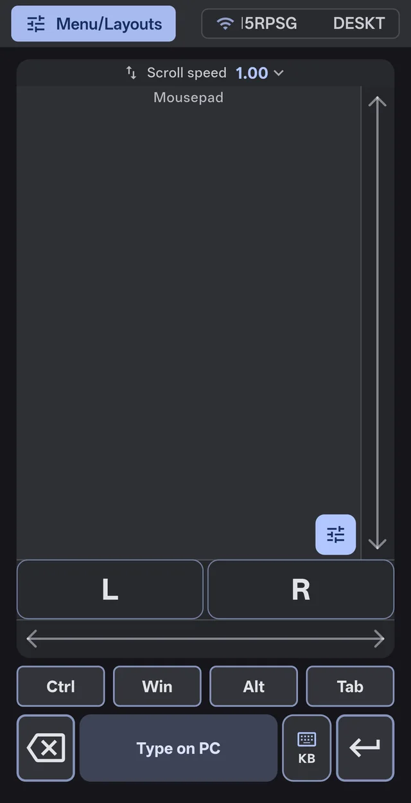
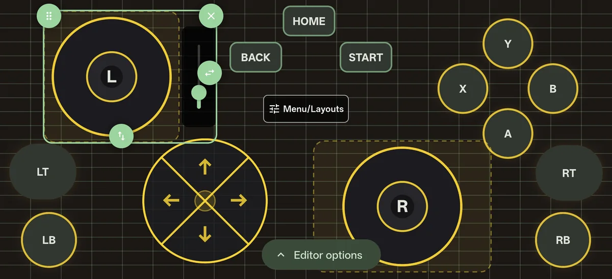

Tu celular es el control.
Un control para juegos, teclado y mouse, control remoto de TV y control de diapositivas para tu PC, Mac, TV o tablet.
Gratis. Por Bluetooth no hay que instalar nada en el otro dispositivo.

Conéctate como prefieras
Bluetooth
Sin instalar nadaVincúlalo una vez desde la configuración de Bluetooth de tu PC, Mac, TV o tablet. Aparece como un control, teclado y mouse de verdad.
Guía de configuración por BluetoothWi‑Fi con Companion
Windows, opcionalLa menor latencia, encuentra tu PC por sí solo y permite que jueguen hasta 16 celulares a la vez.
¿Ves una advertencia del navegador o de SmartScreen?
Companion es nuevo, así que Windows y tu navegador todavía no lo reconocen. Es normal con el software nuevo.
- El navegador dice que el archivo no se descarga con frecuencia: abre tus descargas (Ctrl + J), abre el menú del archivo y elige Conservar; luego, Conservar de todos modos si te lo pregunta.
- "Windows protegió su PC": haz clic en Más información y luego en Ejecutar de todas formas.
- Acepta el aviso del Control de cuentas de usuario para que la instalación pueda agregar el controlador ViGEmBus.
La instalación agrega el controlador de código abierto ViGEmBus solo si falta, para que los juegos vean tu celular como un control de Xbox. Para Wi‑Fi, permite Companion en redes privadas en el Firewall de Windows.
Un control de verdad, en tu celular
Palancas, gatillos, botones superiores y cruceta. Los juegos ven un control real, así que simplemente funciona.


- Palancas flotantesAparecen donde apoyes el pulgar.
- Clic de palancaToca dos veces una palanca para presionarla.
- Juego en grupoHasta 16 celulares en una PC con Windows, cada uno es su propio control.
Más que un control
Cambia de distribución desde el menú. Misma app, misma conexión.
-

MouseTouchpad, clics, desplazamiento y atajos. -

TecladoTodas las teclas, incluidas las F y los atajos. -

Control de TVVolumen, reproducción y flechas para cualquier app de TV. -

Control de diapositivasPowerPoint, Presentaciones de Google o Canva.
También en la app

- Descarga gratisEn Google Play.
- Sin cuentaÁbrela y juega.
- Todo queda en tu redLo que presionas va directo de tu celular a tu dispositivo.

Toma tu celular. Dale play.
Gratis para Android. Companion para Windows es opcional.